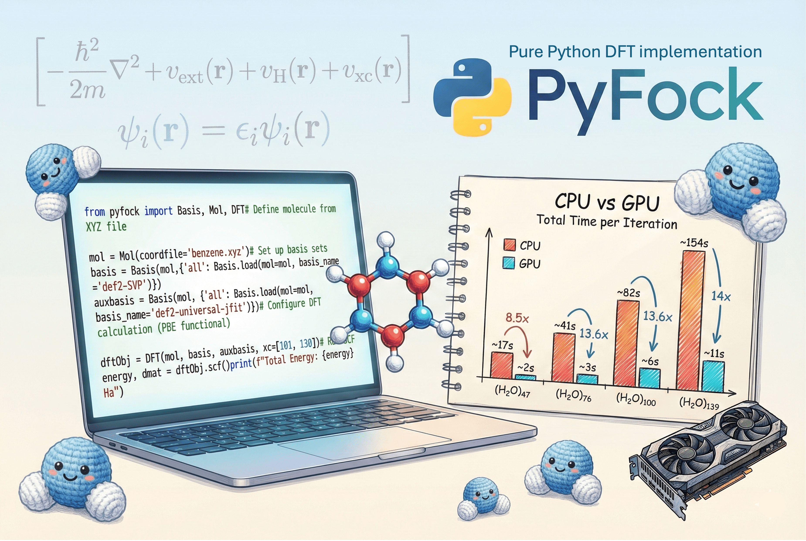
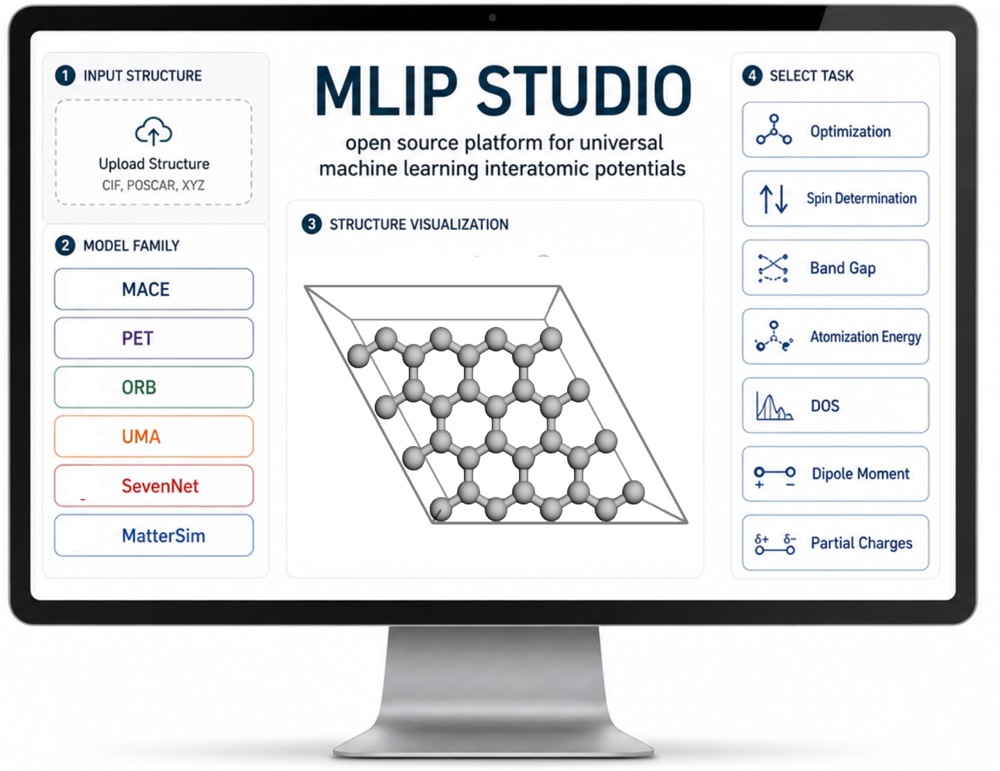

DFT-Based Embedding
Cover artwork for embedding methods in periodic systems.
Visual archive
Publication covers, table-of-contents images, software interfaces, and research visuals collected from the repository and public project pages.
Publication visuals
Visual assets connected to the CV's journal articles and cover features.
Cover artwork for embedding methods in periodic systems.

Graphical abstract for the embedding implementation paper.

Front cover artwork for Brunel harmonic generation in thin-film organic semiconductors.

Graphical abstract designed with molecular visualization tools.

Visual for the broad TURBOMOLE review article.

Visual for GW/BSE-in-DFT and CC2-in-DFT optical gaps of ionic materials.

Graphical summary for molecular and periodic DFT methods.

Simulation-focused artwork for materials modeling themes.
Software visuals
Images for the Code page, including local PyFock and MLIP Playground screenshots plus public tool graphics.

Interface screenshot from the local PyFock project folder.

Graphical overview of the PyFock workflow and benchmarks.

No-code web interface for MLIP-powered atomistic simulation.

TOC-style overview of MLIP app capabilities.

Molecule and crystal visualization using Unity shaders.

Android app interface for crystallographic workflows.

Browser-based conversion between chemistry file formats.

Basis set format conversion interface.

Input generation tool for TURBOMOLE RIPER workflows.